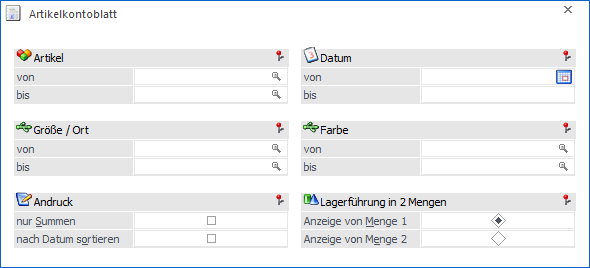
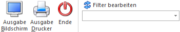

Das Artikelkontoblatt wird im Menüpunkt…
1 WinLine FAKT
1 Auswertungen
1 Artikellisten
1 Artikelkontoblatt
… ausgegeben. In dieser Auswertung werden die Daten aus der Lagerbuchhaltung und der Fakturierung aufgelistet.

Die Ausgabe kann durch folgende Kriterien eingeschränkt bzw. beeinflusst werden:
Ø Artikel von / bis
An dieser Stelle kann nach den Artikeln eingeschränkt werden, welche ausgewertet werden sollen. Bleiben die Felder leer so werden alle Artikel in die Auswertung einbezogen.
Hinweis
Wird im Feld "Artikel von / bis" z.B. nur eine Artikelnummer eingegeben und dieser Artikel hat auch noch Ausprägungen, so werden alle Ausprägungen automatisch mit angedruckt. Nur wenn während des Anklickens des entsprechenden "Ausgabe"-Buttons die STRG-Taste gedrückt wird, wird nur der Hauptartikel alleine ausgewertet.
Ø Ausprägung 1 von / bis (hier "Größe / Ort")
Zusätzlich kann eine Einschränkung auf die Ausprägung 1 vorgenommen werden. Sobald eine Einschränkung auf Ausprägung 1 vorhanden ist, wird die, unter "Artikel" eingegebene Nummer, als Hauptartikelnummer verwendet.
Beispiel
Wenn im Artikeljournal unter "Artikel von / bis" die Nummer "10018" und unter Ausprägung 1 "K" bis "E" eingegeben wird, werden alle selektierten Ausprägungsartikel des Artikels 10018 angezeigt.
Ø Ausprägung 2 von / bis (hier "Farbe")
Neben Ausprägung 1 kann auch eine Einschränkung auf die Ausprägung 2 vorgenommen werden. Sobald eine Einschränkung auf Ausprägung 2 vorhanden ist, wird die, unter "Artikel" eingegebene Nummer, als Hauptartikelnummer verwendet.
Beispiel
Wenn im Artikeljournal unter "Artikel von / bis" die Nummer "CZ010" und unter Ausprägung 2 "GR" bis "ROT" eingegeben wird, werden alle selektierten Ausprägungsartikel des Artikels CZ010 angezeigt.
Ø Datum von / bis
An dieser Stelle kann Definiert werden, welcher Zeitraum ausgewertet werden soll. Ohne Einschränkung wird das gesamte Wirtschaftsjahr ausgegeben.
Ø nur Summen
Durch Aktivierung der Checkbox "Nur Summen" wird das Kontoblatt auf Basis der einzelnen Buchungsarten verdichtet. D.h. man erhält eine verdichtete Auswertung, die alle Zeilen aus der Lagerbuchhaltung, welche mit demselben Lagerbuchungscode gebucht wurden, summiert.
Ø nach Datum sortiert
Wird diese Checkbox aktiviert, wird das Artikelkontoblatt nach Datum sortiert ausgegeben.
Ø Lagerführung in 2 Mengen
Im Artikelstamm kann bei der Anlage eines Artikels entschieden werden, ob der Artikel in einer oder mit 2 Mengen im Lager geführt werden soll (z.B. Stück und KG - bei z.B. Schweinehälften, Puten, etc.). Durch Selektion des Radiobuttons wird entschieden, welche der beiden Lagermengen in der Auswertung herangezogen werden soll.
Buttons

Ø Ausgabe Bildschirm
Mit Hilfe des Buttons "Ausgabe Bildschirm" oder der Taste F5 wird die Auswertung am Bildschirm ausgegeben.
Ø Ausgabe Drucker
Durch Anwahl des Buttons "Ausgabe Drucker" wird die Auswertung am Drucker ausgegeben.
Ø Ende
Durch Drücken des Buttons "Ende" bzw. der Taste ESC wird das Fenster geschlossen.
Ø Filter bearbeiten
Durch Anklicken des Buttons "Filter bearbeiten" kann das Kontoblatt nach frei definierbaren Kriterien eingeschränkt werden.